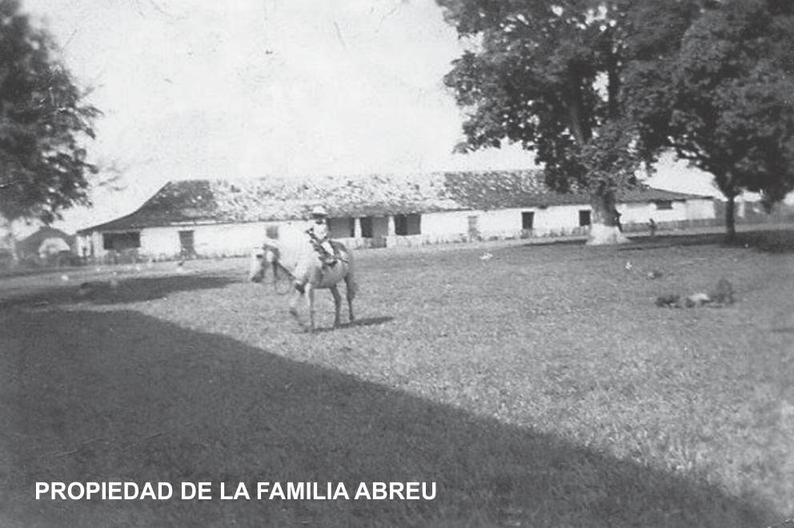
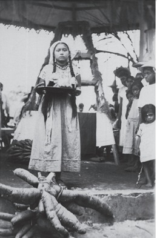

Establecimiento y Evolución de los Ch'oles en Tabasco
Jox iwul jiñi k´elol
Jiñi Ikuxtyäle xcholo’ wajali ch´eñak tyi juliyo’ tyi sojke ijol tyi ujtyi ajtsä tyi xijk’iyo’b tyi troñel cha’añ aj-españolob tyi San Pedro Sabana yik’oty yäxyäxlumil, jiñi lumal ba’añ xcholob käylem tyi Tila , Tumbala Petalcingo , Hidalgo , Trinidad , San Pedro , Sábana , tyi libertad yik’oty Juñchilpa . Jiñi käñälbä bajche’ ili ty’añ jiñäch xTilajob , xTumbalajob yik’oty Petalcingo. ili ñaxañ cha’pej añ iñip yik’oty tzeltal (starr, 1902 ). Ili itsik’le ochij tsijib lumal bajche’ Salto de agua, tyi ochi cha’añ mi yochel xchoñoñelob tyi Chiapas, Guatemala,Tabasco, Campeche y pejtyelo’b tyi tsiji’b España.

Aj lok’elob cha’añ ipätyob tsijib lumaläl
Li ñaxañob ajchuñtyulob yu’jilob laktyäñ chumulob tyi yambä tyak lum baki chumulob ñoj p’uñp’uñob k’otyiyo’ ilayi tyi ilumalo’ (Tumbala y Tila ) tsäbi ipu’tsiyob cha’añobä ye’tyel tyibunarias aj españolob. Li literatura mi yäl añtyakba’ ikostumbre cha’añ mi k’extyaño’ibä cotones, mi k’änob itsutse ijol kom yik’oty ipam kajchilä tyi ijol (peyes 1959 ,p,33) Jiñ cha’añ tsäbu tya’liyob ñaxañ muk’obäj ipejkaño’b lak tya’ñ tsijbubil tyi 1808 mi yälo’b tsä’baj chumliyob mi ñasañob wiñal tyi yu’biyob cha’añ li plaga de langusta (sajk) ik’ux tyäki li pamil jiñ cha’añ tsä’bi lu’ ujtyi chuki añ tyak bäj ma’añix li lumal tsa’bi kaji tyi troñel ipäk’ chukityak ichoñ tyi tabasku pimienta , kapej, kakaw , sik’äb asukal , vainilla yik’oty añil ili troñel añ yum chumulob tyi Alemanias yik’oty’ norteamericanas tsä’bä yochbiyob tyi chanlel Chiapas cha’añ mi päjk’el li kapej laj ty’año’b tsajob tsäbi imuch’kiyob ibäj tyi sistema cha’añ mosojiñtyel añ ibetyo’b yik’oty a kaxlaño’b (alejos , 1988 ) Tsäbij iñami k’iñ tyi k’otyiyo’b xkixtyañajob muk’bä ipejkañob laktyäñ tyi tabasku tsä’bi tyäliyob tyi norte de Chiapas alejos (1988). Mi yäl ili laj kämbiloñla cha’añ ila bajche’ lakchumtyäl yik’oty ajty’año’b mi cha’leñtyel lajol yik’oty jats tyi pejtyel k’iñ, che’ bajche’ tyi iyok mulawil ilayi tyi estado ( Macuspana , Tacotalpa yik’oty Teapa) ya’ tyi witsil añbäj tyi lak lumal, tyi k’otyiy’ob tyi lumal ajchontalpa (Komalcalco, Kunduakan yik’oty Nakajuka).

Ajlok’elob yik’oty tsijib wa’tyälkuxtyäl
Che’ñak tyi ochi jiñi revolución tyi mexiku, ka’bä xCH’olob tyi Chiapas tyi ikäyäyob ichumli’ob. Tyi majliyob tyi chumtyäl tyi iñojtye’el lakandones, (De Vos, 1980). Wokox iyälä jiñi kera, tyi kajilob tyi uts’aty chumtyäl cha’añ jiñi lumtyak tyi ñämiyob tyi ityojle jiñi ajCH’olob. Wajali muk’achix imajñañob ilum ajkaxlañob cha’añ ipäk’ob yiximtyak. Tyi 1950 tyi tsiji’tyisäñtyi jiñi ley, cha’añ muk’ix ich’ämob tyi ityojlel ilum jiñi ajkaxlañob tsa’ixbä lok’iyob majlel tyi ilumalob. Che’ tyi ujtyi bajche’ iliyi.

Iyujtyi’bal xämbal yik’oty k’extyäyal bajche’ mi chumtyälob.
Añtyak ta’bä ajñiyob ilayi tyi lumal cha’añ mi melob tsijib ejido. Yambäjob, ma’añobä itoñel i-añob imajchilob mu’bä imäk’lañ, mi majlelob tyi ilumal cha’añ mi isäklañob tsijib lumal ba’ mejle ityajob ikotyäñtyel (De Vos, 1980). Ili tyi iyäk’a yambä kolem xämbal jiñi CH’ol tyi Tabasko tyi 1937 ya’ tyi ilumal Puxcatan, Xicoténcatl yik’oty tyi Chinal tyi imunicipiole jiñi Takotalpa yik’oty Macuspana (Becerra, 1937). Ili estado mejbi ityajob lum ba’ mej ichumtyälob, yambä mejbi tyajob itoñel ya’ ba’ mi lok’ob kas o ya’ ba’ mi mejle bij. Yambätyak isumlel che’ tyi kajiyob tyi käytyäl tyi 1960 jiñi aje’tyelob tyi yäk’äyob cha’añ mi ñuk isäñtyemajlel lumal chumulo’bä tyi wits ya ba’ jochol ba’ tyo’ pamil. Che’ bajche’ jiñi xcholob tyi cha’ ajñiyo’b tyi ilumal ityaty-ña’o’b icha’añobä che’ tyi k’otyiyob jiñi aj-españolob. Che’bajche’ jiñ, tyi tyejchi jiñi yäjyäx revolución ta’bä ityejchi tyi ye’tyel ajMiguel Alemáñ ta’bä ik’ejema jiñi ajcholelob tyi ya’ba’ micha’leñob pak’, che’jiñi ma’añ itroyelob je’el, tyi cha’ kajiyob tyi xämbal tyi yambä lum bajche Tabasko. Tyi ñumi ja’ tyi kaji ilajob ibä xlakandoñob yik’oty xcholob ikaj dekreto precidelcial jiñi cha’añ ichäkiñob lum. Lajabä bajche’ ili jiñi dekreto tyi 1972 jiñi iwälujump’ej iyuxk’al ityak familia lakandon ba mi su’bob icha’año’bi 600 ux’bajk’ hectaria jiñi imatye’el lakandona. Ili chäkiya lakandones, tzeltalob ykoty xcholob ka’bäl wokol tyi ujtyi ta’ixbä imeleyob 30 koloñas ya’ tyi lumal. Iliyi tyi ujtyi tyi chojkiyob lok’el xtzelktalob yik’oty xcholob tyi chojkiyob majlel tyi Echeverria yik’oty Velazco Suarez tyi Chiapas, ta’bä käyliyob tyi majiyob tyi tabasko (De Vos, 1980).

Lajbä yik´oty tsiji´b k´extyäji´b
Tyi yujti´bal ta´bä ujtyil mu´bä ikotyañ che´ mi k´extyañob ilumal tyi yambä kolem lum jiñi xCH´olob mi taktyaj ityejchel itsätsle juloni´b icha´añ Ejercito Zapatista de Liberación Nacional (EZLN). Ili lajbä tsäñsa mu´bä iyäk´eñob ibä yik´oty militarob tyi iyäk´äyob yujkel bäk´eñ tyi ka´bä xchuñtyälob Chiapanecas tyi iyujtyi´bal, tyi käyliyob ity’añ cha´añ mi ik´extañob ichuñli´ob tyi yambä lumaltyak cha´añ ikäñityañob ikuxtyilel cha´añ ma´añ iyotsaño’ibä tyi kera. Ili yambä chuñtyälel tyi k´extyä ibä mu´bä imelob tyi ilumal cha´añ mi ñämejelob tyi yambä tsiji’b mulawil. Yambälobtyak tyi isäkläyob ik´extyañ ilumal tyi Estados Unidos cha´añ isäklañob iñajal americano. Tyi 2004 ila tyi yambä lum tyi ik´ajtyi XMexicanojob cha´añ imajlelob tyi e´tyel tyi ba´tyak imejlel chukiyestyak, ka´bä XCH´olob chiapenkojob tyi chojkiyob majlel ya´tyi yabä lum, jiñ tyak´iñ mu´bä ityojtyälob ojli mi ik´añob cha´añ weñ ichuñtyälob. Yambäta´ mi ijule yambä ty´añ mu´bä ilu´pech’ yambätyak ty´añ: jiñäch ty´añ ingles.

Establecimiento y Evolución de los Ch'oles en Tabasco
Vida Después de la Conquista
La vida de los ch’oles después de la conquista se desarrolló en un contexto de esclavitud y sumisión, como fuerza disponible para todo tipo de trabajo en las encomiendas españolas de Chilón, San Pedro Sabana y Yuyuxlumil. Las principales poblaciones ch’oles la constituían Tila, Tumbalá, Petalcingo, Hidalgo, Trinidad, San Pedro Sabana, La libertad y Junchilpa. Entre ellos se reconocía como principales dialectos al de Tila, Tumbalá y Petalcingo. Los dos primeros con amplia influencia del tzeltal (Starr, 1902). A esta lista se anexó una nueva población, Salto de agua, establecida para facilitar el comercio entre Chiapas, Guatemala, Tabasco, Campeche y el resto de la nueva España.
Migraciones y Nuevos Territorios
Los primeros fundadores fueron ch’oles que vivían dispersos y cuya condición era muy pobre. Llegaron a este lugar debido a la hambruna que se enfrentaba en sus lugares de origen (Tumbalá y Tila) y porque huían de las cargas tributarias de los españoles. La literatura menciona que tenían la costumbre de vestir cotones, de usar el cabello muy corto con una especie de fleco en la frente y paños en la cabeza (Reyes 1959, p. 53). De estos lugares provino la primera migración ch’ol documentada cerca de 1808. Se dice que llegaron en busca de alimento debido a que en sus tierras se enfrentaba un terrible período de hambruna causada por una plaga de langostas y una espantosa sequía que terminó por destruir lo poco que les quedaba. Sin tierras, no les quedó más salida que emplearse en las fincas destinadas al cultivo y comercio de Tabaco, madera, pimienta, café, cacao, caña de azúcar, vainilla y añil. Estas actividades estaban a cargo de empresas alemanas y norteamericanas que incursionaron a los Altos de Chiapas para fundar plantaciones de café. Los ch’oles, entonces, se incorporaron a un sistema de peonaje por deuda donde los kaxlanes explotaron y sometieron a estas poblaciones (Alejos, 1988). Debido a esto, años después se registraron un mayor número de migraciones ch’oles a Tabasco de grupos provenientes del norte de Chiapas. Alejos (1988) menciona que es un referente primordial de identidad de esta cultura con quien el indígena ha mantenido las relaciones más intensas y conflictivas a lo largo del tiempo. a lo largo del sur del estado (Macuspana, Tacotalpa y Teapa), en la zona montañosa de la región, y llegaron hasta el territorio de la Chontalpa (Comalcalco, Cunduacán y Nacajuca).
Desplazamientos y Cambios
Con la gesta de la Revolución Mexicana, muchos de los ch’oles chiapanecos dejaron sus lugares de origen debido a la inseguridad que reinaba en el campo y se introdujeron a la selva lacandona para habitar en ella (De Vos, 1980). Al triunfar la Revolución Mexicana, se inauguró una nueva era para las poblaciones indígenas que posibilitaron tomar el control de las fincas que los habían sometido por tanto tiempo para convertirlas en ejidos que les sirvieran como espacios de vivienda y trabajo. Esto fue posible porque a nivel mundial se enfrentó una crisis económica que obligó a las compañías extranjeras a retirarse y dejar las fincas abandonadas. Esto facilitó, en gran parte, la gesta de la Reforma Agraria y las tierras abandonadas pasaron a manos de los ch’oles. Al inicio solo fungían como tierras prestadas para la siembra del maíz hasta 1950, fecha en que las empresas las liberan y quedan completamente en propiedad de esta población.
Últimas Migraciones y Cambios Culturales
Algunos ocuparon estos territorios para conformar nuevos ejidos. Otros, al verse sin trabajo y con una familia que mantener, deciden alejarse de sus poblaciones para introducirse a nuevas tierras que les proveyeran de sustento (De Vos, 1980). Este factor produjo otra gran migración de ch’ol a Tabasco en 1937 hacia poblaciones como Puxcatan, Xicoténcatl y El Chinal en los municipios de Tacotalpa y Macuspana (Becerra, 1937). Por un lado, el estado les permitía hacerse de nuevas tierras para vivir, mientras que por otra les daba la oportunidad de trabajar en las recientes empresas petroleras o en aquellos oficios derivados de la construcción de carreteras. Otro de los procesos de asentamiento ch’ol tuvo lugar en 1960 cuando el gobierno federal autorizó la expansión de las poblaciones que habitaban las tierras altas hacia espacios desocupados ubicados en las áreas bajas de selva. De esta forma los ch’oles recuperaron el territorio que sus ancestros habían ocupado antes de la llegada de los españoles. Colateralmente, se presenta la denominada Revolución Verde promovida por el gobierno de Miguel Alemán que provocó el desplazamiento de los campesinos de los campos de cultivo y, por ende, su desempleo. Nuevamente tuvieron que migrar a otras tierras entre las que se encontraba Tabasco. Unos años después surge un enfrentamiento entre lacandones y ch’oles debido a la emisión de decretos presidenciales para colonizar las tierras. Un ejemplo de esto fue el decreto de 1972 hacia sesenta y seis jefes de familia lacandones donde se les declaraba dueños legítimos de más de 600 mil hectáreas de la selva lacandona. Las consecuencias fueron graves enfrentamientos entre los lacandones tzeltales y ch’oles quienes ya habían establecido más de 30 colonias dentro de esta zona. El resultado fue que los tzeltales y ch’oles fueron desalojados y reubicados en la frontera de Echeverría y Velazco Suárez, en Chiapas. Los que quedaron, se dirigieron hacia Tabasco (De Vos, 1980).
Desafíos y Cambios Modernos
Dentro de los últimos sucesos que favorecieron la migración de ch’oles a otros estados, se encuentra el levantamiento armado del Ejército Zapatista de Liberación Nacional (EZLN). Los enfrentamientos sangrientos que se daban entre estos y los militares hicieron temblar la seguridad de muchas familias chiapanecas que, finalmente, decidieron mudarse a otras zonas para resguardar sus vidas o para evitar ser involucrados. Este cambio de vida implicó también un cambio total de sus hábitos y costumbres para adaptarse a su nueva realidad. También hubo quienes buscaron emigrar a Estados Unidos en busca del sueño americano. En 2004, dicho país solicitó mexicanos para trabajar en sus maquiladoras y muchos ch’oles chiapanecos fueron enviados a este país. Con el dinero que ganaban se hacían de algunas posesiones que les permitían vivir dignamente. Nuevamente la lengua y las costumbres vuelven a ser desplazadas por una cultura dominante: la del inglés.